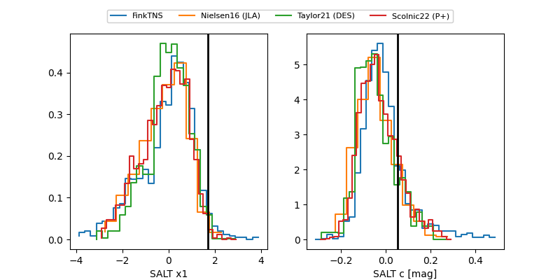

FINK: ZTF25abpnpjx
Lasair: ZTF25abpnpjx
ALeRCE: ZTF25abpnpjx
ZTF25abpnpjx (ztf,fink)
equatorial (ra, dec) = (135.2608,+25.01152)
galactic (l, b) = (201.4899,+38.67964)

last ztfr=19.43
3 ztfr detections